高级数据结构与算法分析¶
Grading Policy¶
平时（<=60）¶
• Homework 10%
• Discussions 10%
• Research Project 30% (Project1: 14% + Presentation 6% ; Project2: 10%)
• Midterm 10%
• Bonus
Final 40%¶
Chapter 1 ---AVL Trees, Splay Trees, and Amortized Analysis¶
• height: 该节点向下的最长路径长度
• depth：根节点到该节点的距离
AVL Tree¶
Definition¶
-
左右子树高度差不超过1
-
所有子树都是AVL Tree
The Minimum number of nodes¶
Single Rotation¶
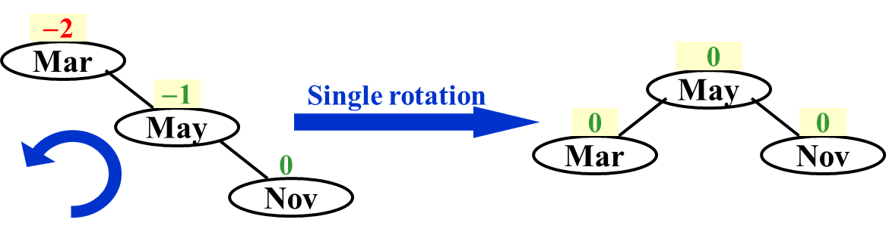
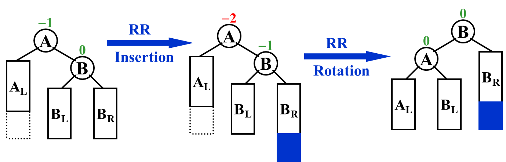
Double Rotation¶
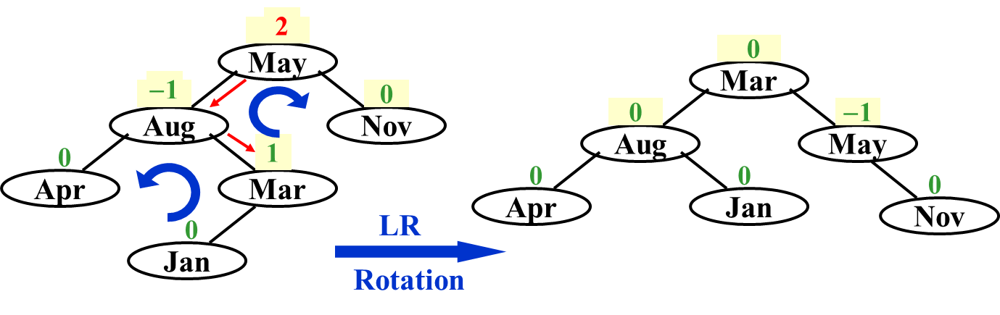
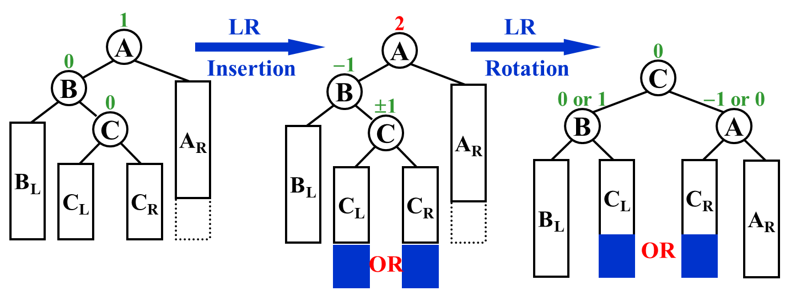
Splay Tree | 伸展树¶
Definition¶
从空树开始连续M次操作时间不会超过O(M log N)
核心思想：一个节点被访问后，通过一系列rotation操作将这个节点转移至根节点
Operation¶
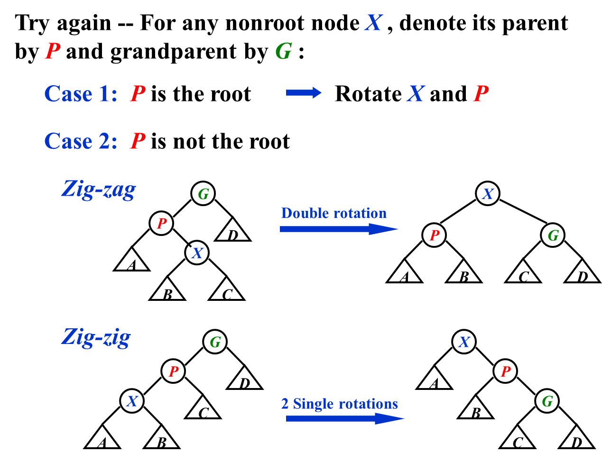
Deletion¶
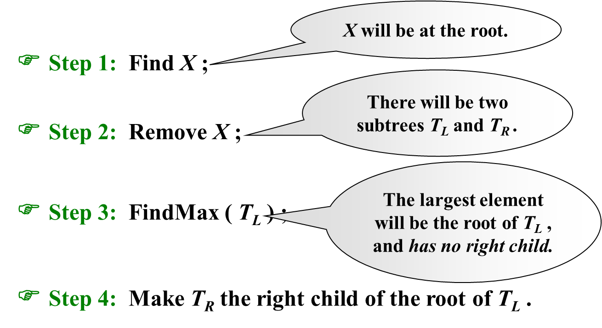
Amortized Analysis | 摊还分析¶
求数据结构的一个操作序列中执行的所有操作的平均时间，来评价操作的代价。
Aggregate analysis | 聚合分析¶
证明对所有n个操作，一个包含n个操作的序列总共花费最坏情况时间\(T(n)\)。在最坏的情况下，每次操作的平均成本或平摊成本因此是\(\frac{T(n)}{n}\)。
Accounting method | 核算法¶
对于每一种操作，赋予一个摊还代价(amortized cost)。赋予某些操作的摊还代价可能多于或少于其实际代价。当一个操作的摊还代价超出其实际的代价的时候，我们将差额存入数据结构的特定对象中，存入的差额称为信用（Credit)。对于后续操作中小于其实际代价的时候，预存的信用可以用来支付差额。
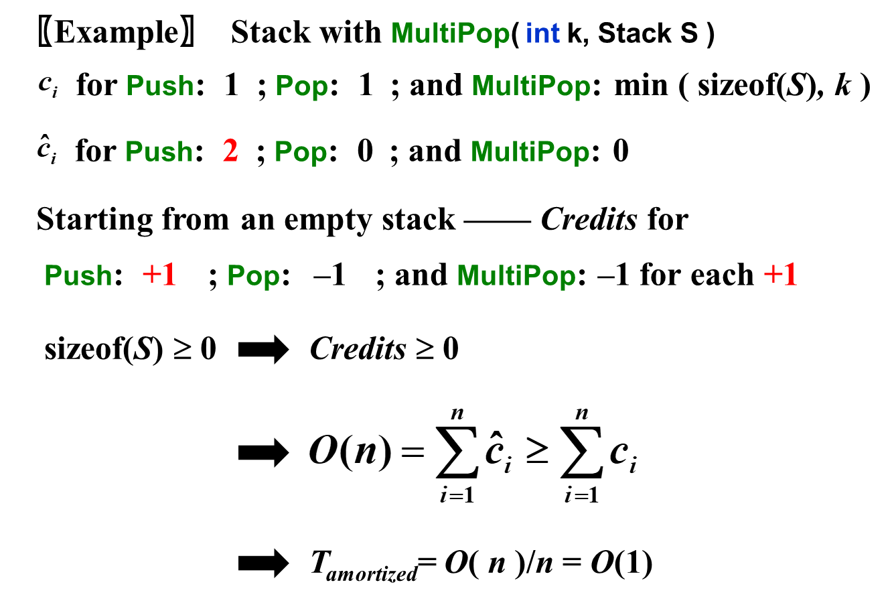
Potential method | 势能法¶
使用势函数\(\Phi\)来表示credit。
Note
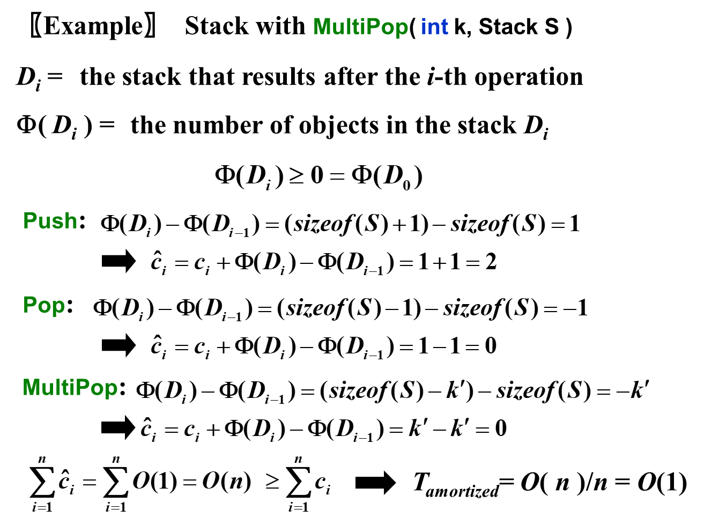
Chapter 2 ---Red-Black Trees and B+ Trees¶
Red-Black Trees¶
Definition¶
1.红黑树是一个二叉排序树
2.每个节点都是红色或者黑色
3.根节点为黑色
4.叶子节点（外部节点、NULL节点、失败的节点）都为黑色
5.红色节点的父节点和孩子节点都为黑色
6.对于每个节点，从该节点到任一叶子节点的路径上的黑色节点数量相同
Insert¶
每次插入都插入红色节点，对称同理
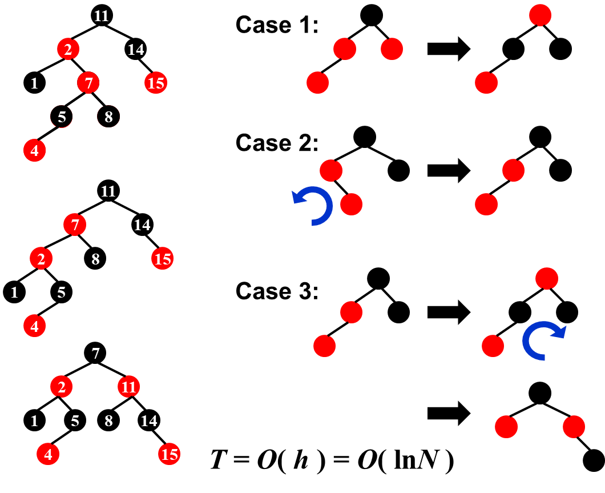
Delete¶
Case 1 ：\(x_0\)的兄弟节点\(w\)为红色。
• 交换父节点和兄弟节点的颜色。(\(w\)变为黑色)
• 对删除的节点的方向进行一次rotation。
• 前往Cases 2.1 / 3 / 4。
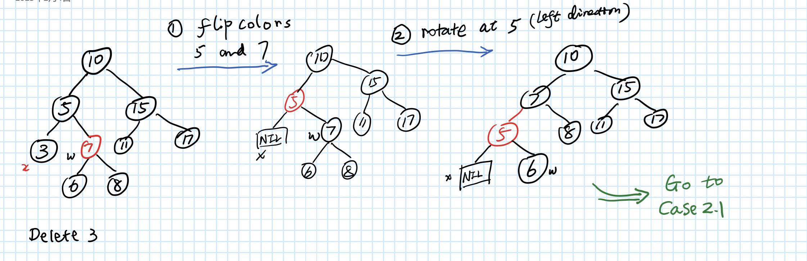
Case 2.1 \(x_0\)的兄弟节点\(w\)为黑色, 并且\(w\)的子节点为黑色。 同时, \(x\)的父节点为红色。
• 交换\(x_0\)父节点和兄弟节点的颜色，完成删除。
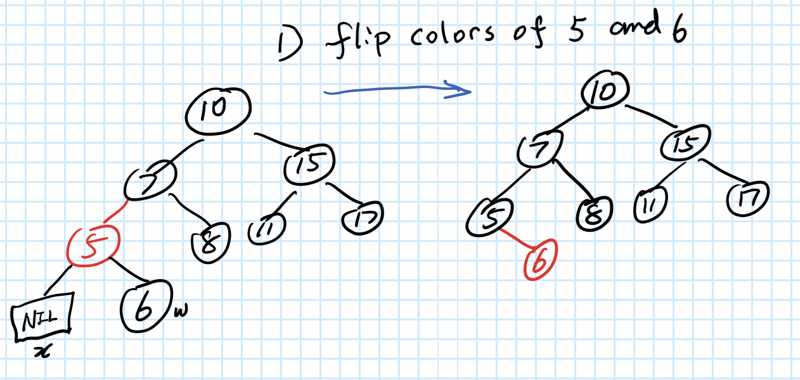
Case 2.2 \(x_0\)的兄弟节点\(w\)为黑色，并且\(w\)的子节点都为黑色。并且\(x_0\)的父节点为黑色。
• 把\(x_0\)的兄弟节点设为红色
• \(x_0\)的父节点变为新的删除节点\(z\)，递归至根节点。
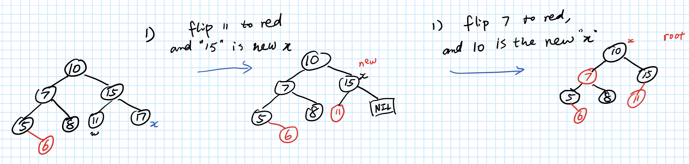
Case 3 \(x_0\)的兄弟节点\(w\)为黑色，\(w\)有一个红色的子节点，并且"outer nephew"为黑色。
• 交换\(w\)和"inner nephew"的颜色。
• 对\(x_0\)的兄弟节点\(w\)向"outer nephew"的方向进行一次rotation。
• 前往case 4。
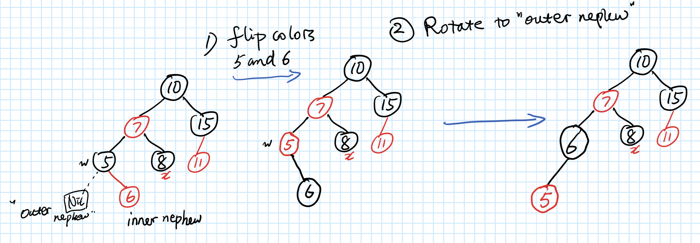
Case 4 \(x_0\)的兄弟节点\(w\)为黑色，\(w\)至少有一个红色的子节点，并且 "outer nephew"为红色。
• 将兄弟节点\(w\)设为父节点的颜色；将父节点和"outer nephew"的颜色设为黑色.
• 将父节点向被删除节点的方向进行一次rotation。
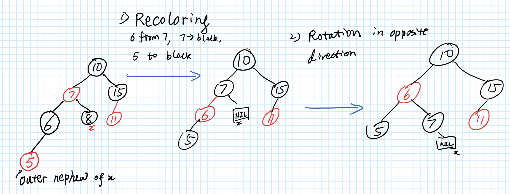
Note
最多的rotation次数：Case 1 \(\rightarrow\) Case 3 \(\rightarrow\) Case 4 (3次)
Numbers of Rotations¶
B+ Trees¶
Definition¶
M阶B+树 (B+ Trees of order M) 具有以下性质：
1.根节点是一个叶节点或者有 \(2-M\) 个子节点。
2.所有非叶节点（除了根节点）都有 \(\lceil M/2\rceil-M\) 个子节点。
3.所有叶节点都在同一层，假设每个非根叶也有 \(\lceil M/2\rceil-M\)个键。
Chapter 3 ---Inverted File Index | 倒排文件索引¶
在建立索引时就确定字符串在哪里出现过。即在查找时用关键词为索引查找文档。
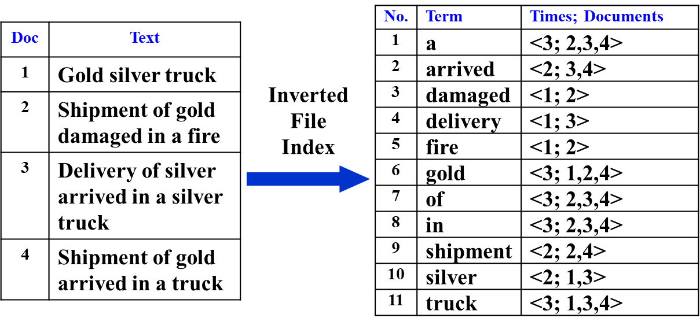
生成算法¶
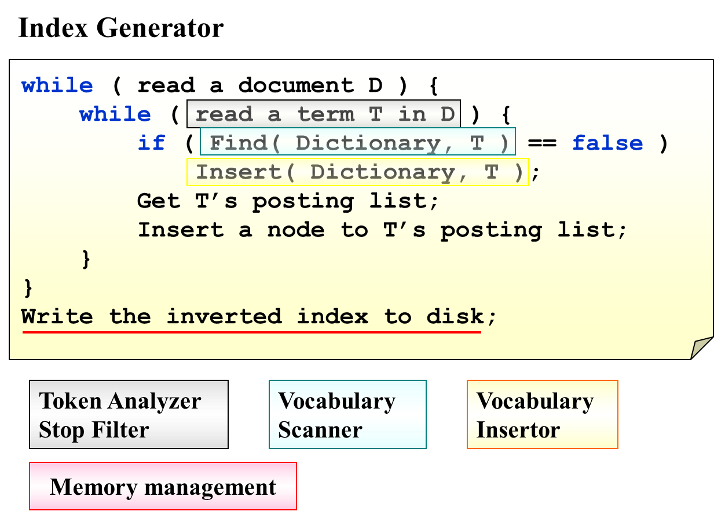
处理方法¶
Precision | Recall¶
Precison：查询到的文件中相关的比例
Recall：有关的文件中被查询到的比例
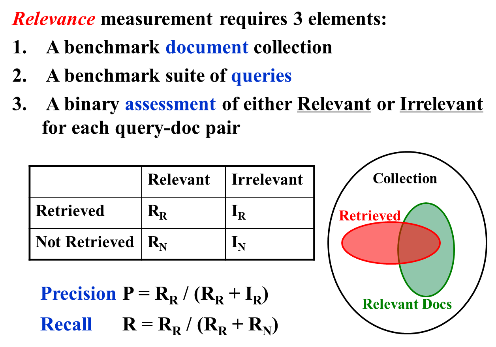
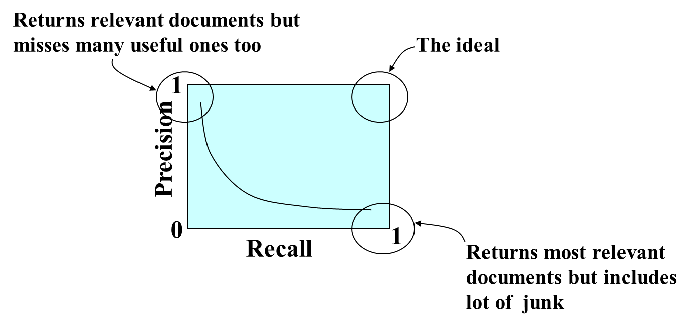
Note
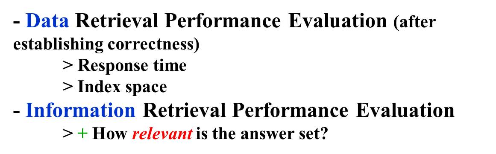
Chapter 4 ---Leftist Heaps and Skew Heaps¶
Leftist Heaps | 左式堆¶
Null path length | 零路径长¶
从X到一个不具有两个儿子的结点的最短路径的长。
定义 \(Npl(NULL) = -1\)。
性质¶
堆中的任何节点，其左儿子的零路径长>=右儿子的零路径长。
定理¶
右路径上有 \(r\) 个节点的 leftist tree 至少有 \(2^r-1\) 个节点
Merge¶
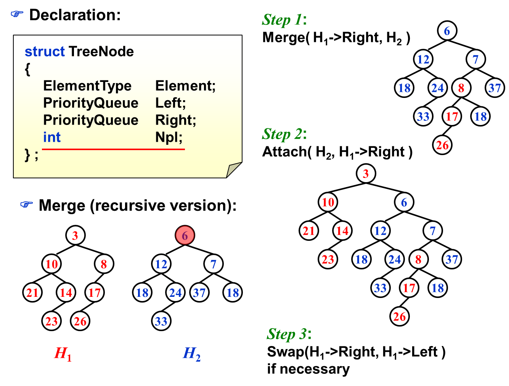
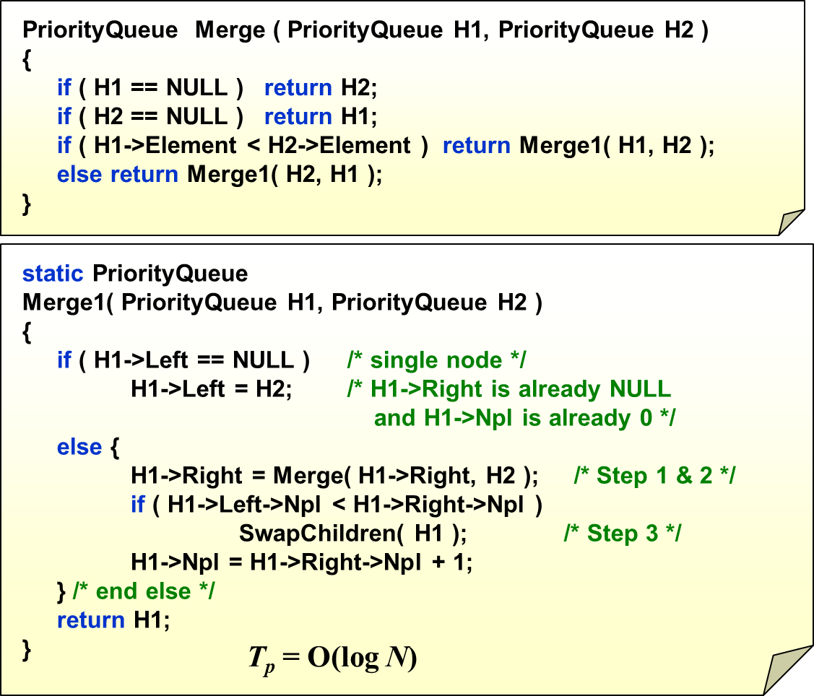
DeleteMin¶
1.删除根节点
2.Merge左右子树
Skew Heaps | 斜堆¶
目标¶
任何M次连续的操作的时间复杂度为O(MlogN)
Heavy node¶
右子树节点 > 左子树节点
否则为 light node
Merge¶
(case1) 如果一个空斜堆与一个非空斜堆合并，返回非空斜堆。
(case2) 如果两个斜堆都非空，那么比较两个根节点，取较小堆的根节点为新的根节点。将”较小堆的根节点的右孩子”和”较大堆”进行合并。
(case3) 合并后，交换新堆根节点的左孩子和右孩子。
Amortized Analysis for Skew Heaps¶
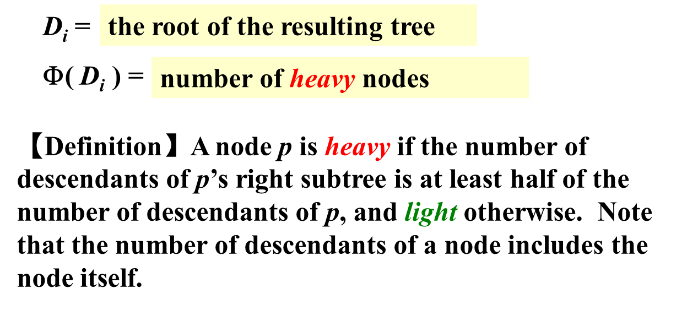
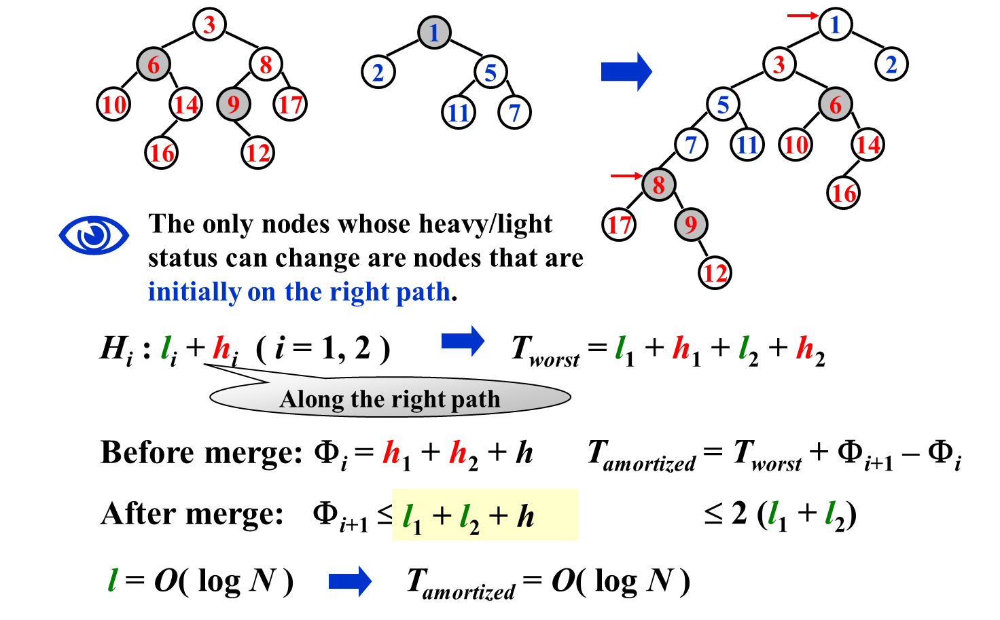
Chapter 5 ---Binomial Queue | 二项堆¶
Definition¶
二项堆是堆的集合，每个堆都是二项树(binomial tree)。
Binomial Tree | 二项树¶
\(•~height~为~0~的二项树为一个节点\)
\(•~高度为~k~的二项树~B_k~,由~B_{k-1}~连接到~B_{k-1}~的根节点构成\)
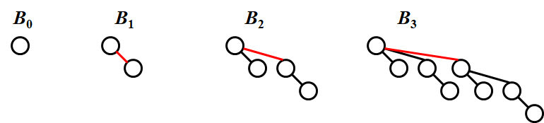
Note
\(•~B_k~有~k~个节点，分别为~B_0,B_1,……,B_{k-1}\)
\(•~B_k~有2^k个节点\)
\(•~深度为d的节点数为\left( \begin{array}{c}k \\ d \end{array} \right)\)
Merge¶
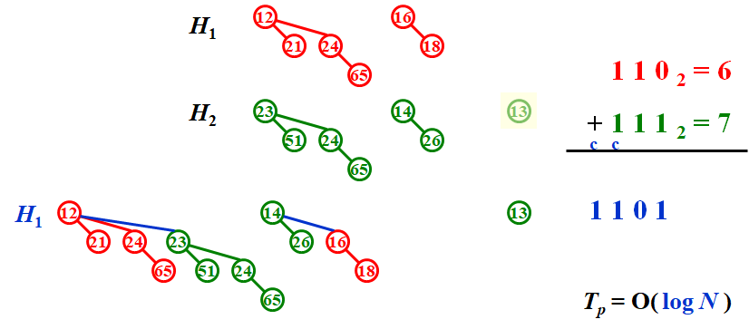
Insert¶
特殊的Merge
• 如果最小的空二项树为 \(B_i\) ，则 \(T_p=Const\times(i+1)\)。
• 对一个空二项堆，N次Inseet操作的worst case为 \(O(N)\) 。因此平均时间复杂度为常数。
FindMin¶
最小值一定是其中一颗二项树的根节点。由于至多存在 \(\lceil logN \rceil\) 个根节点，\(T_p=O(logN)\)。
Note
可以通过记忆并实时更新最小值所在位置，使时间复杂度到达\(O(1)\)。
DeleteMin¶
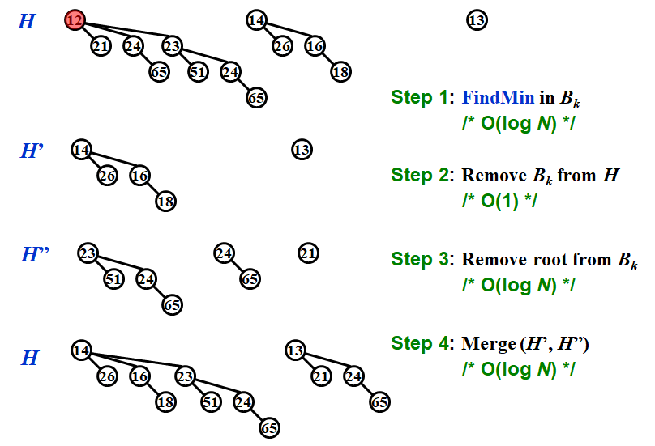
Proof¶
Code¶
typedef struct BinNode *Position;
typedef struct Collection *BinQueue;
typedef struct BinNode *BinTree; /* missing from p.176 */
struct BinNode
{
ElementType Element;
Position LeftChild;
Position NextSibling;
} ;
struct Collection
{
int CurrentSize; /* total number of nodes */
BinTree TheTrees[ MaxTrees ];
} ;
BinTree CombineTrees( BinTree T1, BinTree T2 )
{ /* merge equal-sized T1 and T2 */
if ( T1->Element > T2->Element )
/* attach the larger one to the smaller one */
return CombineTrees( T2, T1 );
/* insert T2 to the front of the children list of T1 */
T2->NextSibling = T1->LeftChild;
T1->LeftChild = T2;
return T1;
}
//Merge
BinQueue Merge( BinQueue H1, BinQueue H2 )
{ BinTree T1, T2, Carry = NULL;
int i, j;
if ( H1->CurrentSize + H2-> CurrentSize > Capacity ) ErrorMessage();
H1->CurrentSize += H2-> CurrentSize;
for ( i=0, j=1; j<= H1->CurrentSize; i++, j*=2 ) {
T1 = H1->TheTrees[i]; T2 = H2->TheTrees[i]; /*current trees */
switch( 4*!!Carry + 2*!!T2 + !!T1 ) {
case 0: /* 000 */
case 1: /* 001 */ break;
case 2: /* 010 */ H1->TheTrees[i] = T2; H2->TheTrees[i] = NULL; break;
case 4: /* 100 */ H1->TheTrees[i] = Carry; Carry = NULL; break;
case 3: /* 011 */ Carry = CombineTrees( T1, T2 );
H1->TheTrees[i] = H2->TheTrees[i] = NULL; break;
case 5: /* 101 */ Carry = CombineTrees( T1, Carry );
H1->TheTrees[i] = NULL; break;
case 6: /* 110 */ Carry = CombineTrees( T2, Carry );
H2->TheTrees[i] = NULL; break;
case 7: /* 111 */ H1->TheTrees[i] = Carry;
Carry = CombineTrees( T1, T2 );
H2->TheTrees[i] = NULL; break;
} /* end switch */
} /* end for-loop */
return H1;
}
//DeleteMin
ElementType DeleteMin( BinQueue H )
{ BinQueue DeletedQueue;
Position DeletedTree, OldRoot;
ElementType MinItem = Infinity; /* the minimum item to be returned */
int i, j, MinTree; /* MinTree is the index of the tree with the minimum item */
if ( IsEmpty( H ) ) { PrintErrorMessage(); return –Infinity; }
for ( i = 0; i < MaxTrees; i++) { /* Step 1: find the minimum item */
if( H->TheTrees[i] && H->TheTrees[i]->Element < MinItem ) {
MinItem = H->TheTrees[i]->Element; MinTree = i; } /* end if */
} /* end for-i-loop */
DeletedTree = H->TheTrees[ MinTree ];
H->TheTrees[ MinTree ] = NULL; /* Step 2: remove the MinTree from H => H’ */
OldRoot = DeletedTree; /* Step 3.1: remove the root */
DeletedTree = DeletedTree->LeftChild; free(OldRoot);
DeletedQueue = Initialize(); /* Step 3.2: create H” */
DeletedQueue->CurrentSize = ( 1<<MinTree ) – 1; /* 2MinTree – 1 */
for ( j = MinTree – 1; j >= 0; j – – ) {
DeletedQueue->TheTrees[j] = DeletedTree;
DeletedTree = DeletedTree->NextSibling;
DeletedQueue->TheTrees[j]->NextSibling = NULL;
} /* end for-j-loop */
H->CurrentSize – = DeletedQueue->CurrentSize + 1;
H = Merge( H, DeletedQueue ); /* Step 4: merge H’ and H” */
return MinItem;
}
习题¶
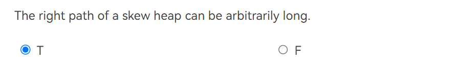
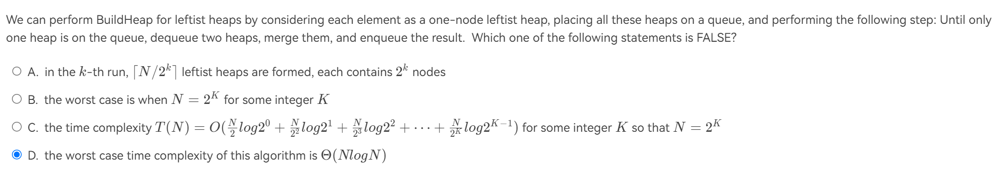